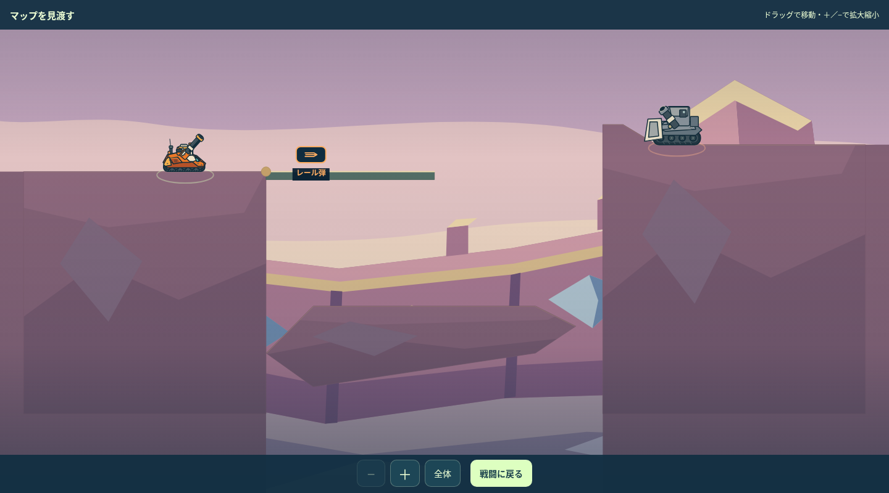
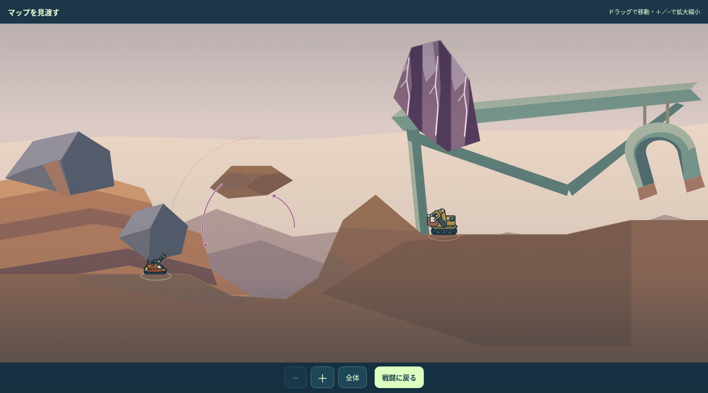
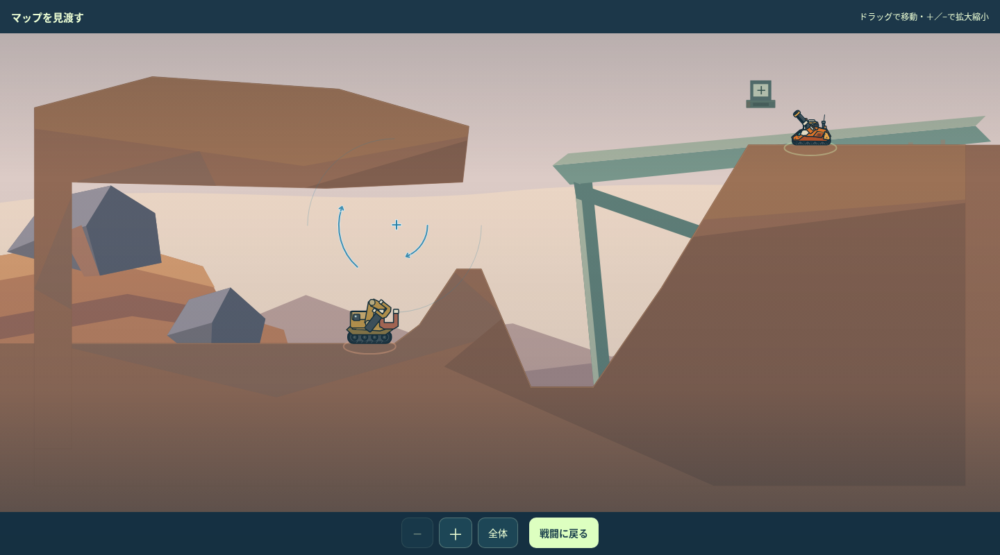

<!doctype html><html lang="ja"><meta charset="utf-8"><title>初出4面の完成形</title><style>body{background:#10212b;color:#e3eef4;font:16px/1.7 system-ui;margin:0}main{max-width:1440px;margin:auto;padding:24px}a{color:#7fdfd1}.pair{display:grid;grid-template-columns:1fr 1fr;gap:16px}img{width:100%;height:auto}figure{margin:0}section{padding:24px 0;border-top:1px solid #466}h2{margin-top:0}@media(max-width:750px){.pair{grid-template-columns:1fr}}main{width:1600px;max-width:none}.grid{display:grid;grid-template-columns:1fr 1fr;gap:24px}article{background:#1d303c;padding:16px;border-radius:12px}article h2{font-size:24px}</style><main><h1>ARCLINE｜31・37・71・73面</h1><p>0.26.0候補／変更後レビュー対象／実ゲーム描画</p><div class="grid"><article><h2>31｜見える結晶で一回返す</h2></article><article><h2>37｜起きた橋から下の受け島へ</h2></article><article><h2>71｜低所と上棚から磁場へ入れる</h2></article><article><h2>73｜端子の反転で次の射線を変える</h2></article></div></main></html>